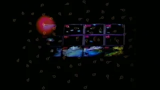
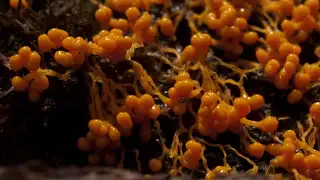
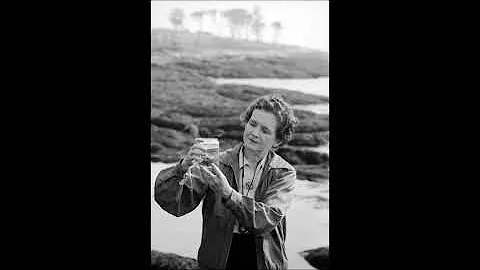
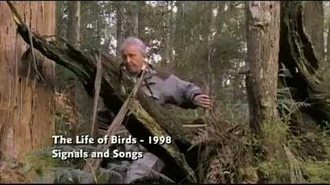
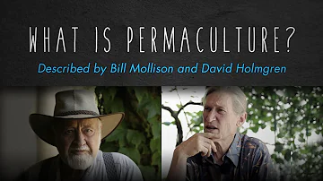
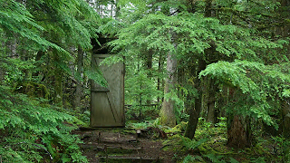
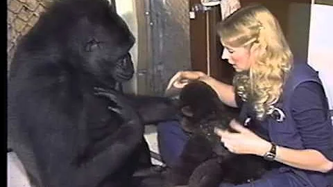
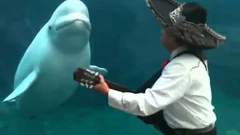
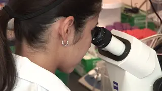
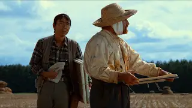

Cosmos: Carl Sagan on whale songs
168 views . May 3, 2021
- 4
- 0
- SHARE
- SAVE
Cube
3 subscribers

3:35
Carl Sagan - COSMOS - Evolution
carlsagandotcom
393K views . 12 years ago
18:03
Akira kurosawa | Dreams Film | The village of the Watermills
Red pill and blue pill
4.9K views views . 11 months ago

2:02
Fantastic Fungi, Official Film Trailer | Moving Art by Louie Schwartzberg
melodysheep
1.2M views . 2 years ago

10:39:08
Silent Spring - Rachel Carson (1962) audiobook
kuldeep
4.4K views . 3 months ago

3:35
Amazing Lyre bird, BBC David Attenborough
Ashkan Niujpour
56K views . 8 years ago

3:35
What is Permaculture? By Bill Mollison, David Holmgren
DogsGoWoofProductions
81K views . 3 years ago

3:35
How trees talk to each other | Suzanne Simard
melodysheep
1.7M views . 5 years ago

4:41
A Conversation With Koko
Beth Gallagher
21M views . 8 years ago

3:35
Mariachi Conneticut Serenades a Beluga Whale
captainkickstand
6.5M views . 10 years ago
2:21
Joseph Campbell--The Dynamic of Life
Joseph Campbell Foundation
226K views . 11 years ago

12:12
Understanding Light and Why it Exists
But Why?
26K views . 2 years ago

3:35
CROWS - Dreams (夢 Yume, aka Akira Kurosawa's Dreams) 1990
BuenasJuergas
66K views . 2 years ago
3:35
Carl Sagan - 'A Glorious Dawn' ft Stephen Hawking
melodysheep
12M views . 11 years ago